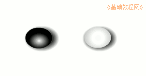
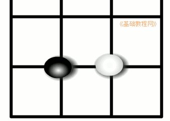
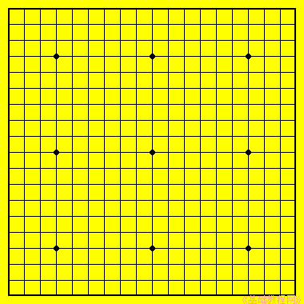
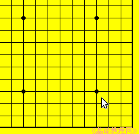

围棋入门基础教程
作者：TeliuTe 来源：基础教程网
围棋有玻璃的、塑料的和陶瓷等，一般为扁圆形，棋盘也有塑料或木质的，下面我们来看一个练习；
1、棋子
1）围棋的棋子分黑白两色，装在盒子里或罐子里；

2）走棋的时候双方轮流，黑子先走每次下一个子，捏子的时候，用食指手指甲背和中指的指肚，轻轻夹稳棋子；
3）落子的时候，棋子放到棋盘线的交叉点上，放下后就不能再移到别的点上了；

2、棋盘
1）围棋的棋盘由许多线条组成，横着有19条线，竖着也是19条，因此是一个正方形的；

2）棋子放在各个线条的交点上，在棋盘中有9个比较大的点，这些是星位，是重要的点；

3、保养
1）围棋棋子小而多，容易丢失，养成随手放好的习惯；
2）棋子轻拿轻放，下棋稳当平和别着急；
3）下完棋后，自觉收回自己的棋子，收好棋盘，养成好习惯；
4）讲究卫生，保持棋具整洁；
本节学习了棋子棋盘的基础知识，如果你成功地完成了练习，请继续学习下一课内容；
本教程由86团学校TeliuTe制作|著作权所有
基础教程网：http://teliute.org/
美丽的校园……
转载和引用本站内容，请保留作者和本站链接。